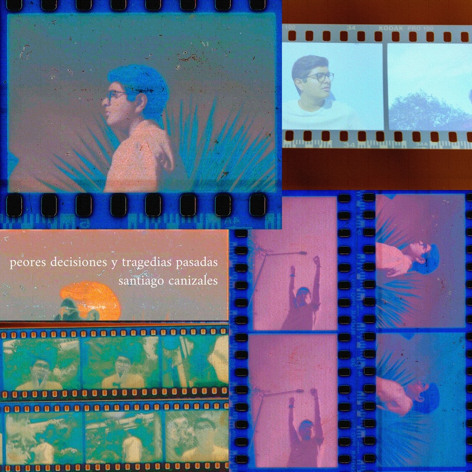
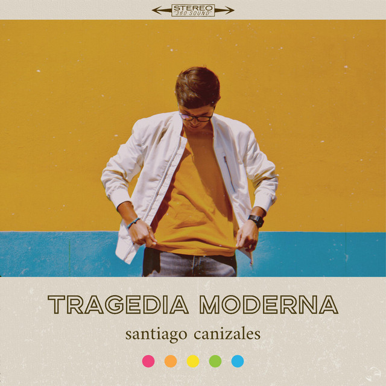
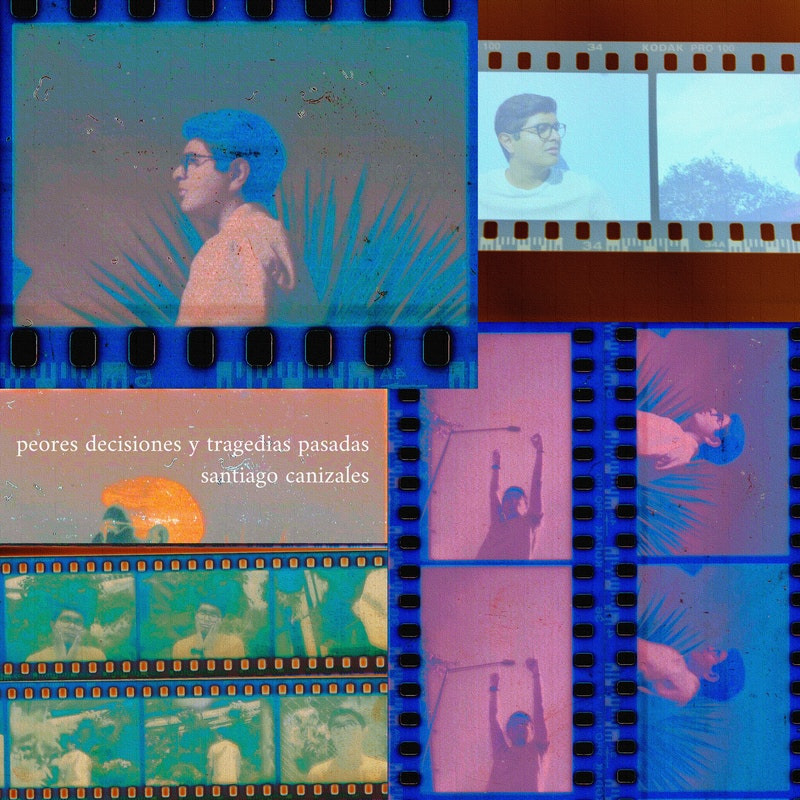
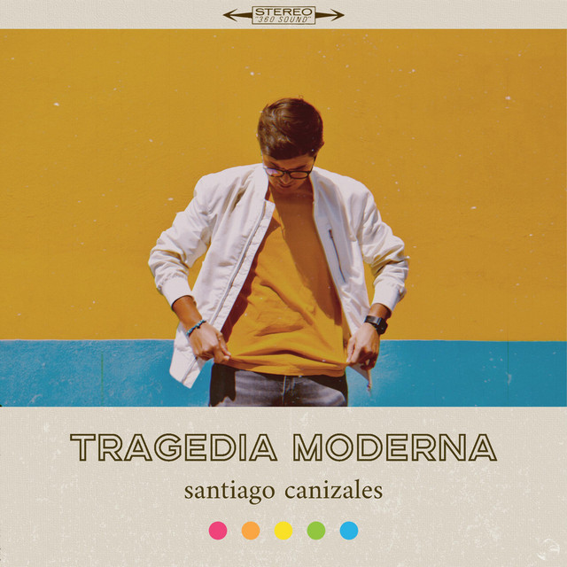

"Para vivir un poco, hay que estar un poco loco por vivir"
08/2015 - 05/2018
Toluca, Edo. Mex
08/2018 - Presente
CDMX
08/2017 - 07/2018, 08/2019 - Presente
Tecnológico de Monterrey, Campus Toluca (2017-2018) y Campus Santa Fe (2019-Presente)
2015 - 2020
Desde la edad de 16 años comencé mi primer proyecto como solista con el que lancé 4 EPs: "Insomniac" (2016), "Nada Mal" (2017), "Malos Hábitos" (2019) y "Peores Decisiones y Tragedias Pasadas" (2020), al igual que el álbum "Tragedia Moderna" (2020). EN 2018 lancé el sencillo más exitoso del proyecto llamado "Si No Fuera Por El Alcohol" el cual tiene más de 100k reproducciones a través de diferentes plataformas. A través de este proyecto me presenté en escenarios en Toluca y en la Ciudad de México incluyendo una presentación en el Festival Soñarte en El Plaza Condesa.

2016 - 2017

2018 -2 020
Español | Inglés | Francés
Fotografía | Audio | Cine | Televisión | Videojuegos
| HORARIO | LUNES | MARTES | MIERCOLES | JUEVES | VIERNES | SÁBADO |
| 7:00 AM - 9:00 AM | Curso 1 | Curso 3 | Curso 4 | Curso 5 | ||
| 9:00 AM - 11:00 AM | Libre | Curso 4 | Libre | Curso 2 | Curso 1 | |
| 11:00 AM - 1:00 PM | Curso 5 | Libre | Curso 2 | Libre | Curso 3 | |
| 1:00 PM - 3:00 PM | DESCANSO | |||||
| 3:00 PM - 5:00 P | Curso 5 | Curso 2 | Curso 4 | Curso 3 | Curso 4 | |
| 5:00 PM - 7:00 PM | Curso 3 | Libre | Curso 3 | |||
| 7:00 PM | FIN DE JORNADA | |||||
santiagocanizales.com
instagram.com/santi_canizales
twitter.com/santi_canizales